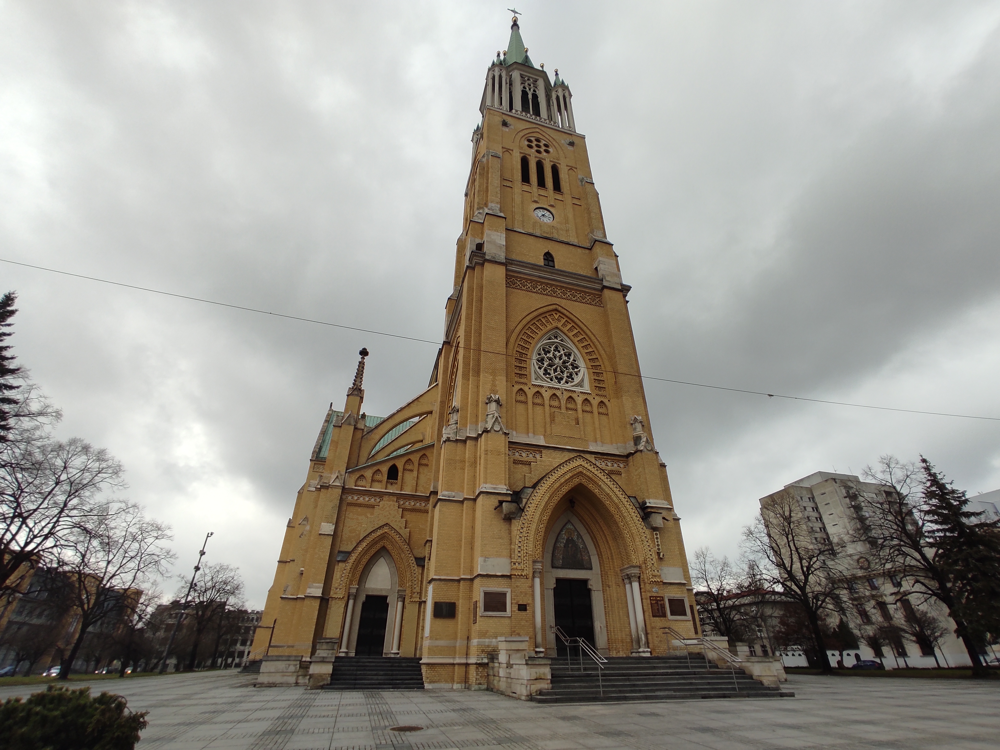
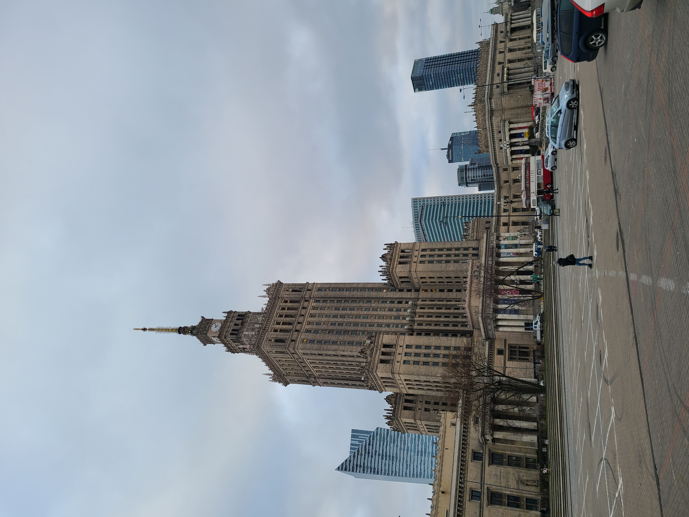
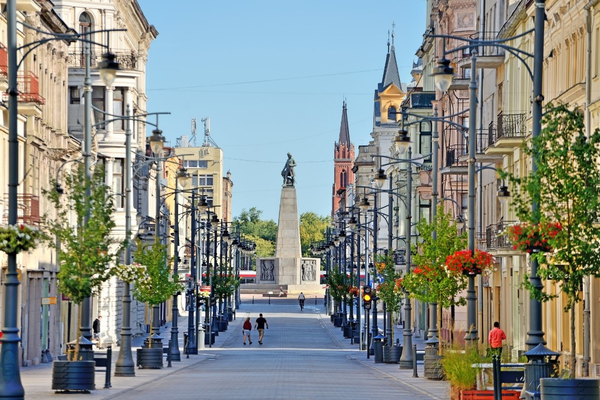

Cinema
THE FILM INDUSTRY IN LODZ
For years, Lodz was known as a great textile industry but also, and this is what we will deal with today, cinema.

Art | History | Religion
ŁÓDŹ CATHEDRAL | Visit
Here is my perception of my visit in Lodz.
Hi hope you'll enjoy reading this as much as i did visiting it.
Lifestyle
Musculation's Dietetics
Hi everyone,
Today, I will explain you one of the best private part in Erasmus : The Food. When you are a Student in France, maybe you are sleeping always at your parent's home and you can't choose the food or quantities. But when you are in Erasmus you must control your food if not you'll die.

Visit
A weekend in Warsaw
My friend Eloi and I should stop in Warsaw before arriving in Łódź because of our flight, who did not reach Łódź directly. So, we have booked an Airbnb flat for 2 people in the center of the Polish capital for 2 nights to visit before coming to Łódź.
ART
Manufaktura's History
What is Manufaktura ?
Manufaktura is a shopping, services and entertainment centre, who opened on 17 May 2006 in the centre of the city of Łódź. It is located between Zachodnia, Ogrodowa, Drewnowska and Jana Karskiego streets on the site of the old Izrael Poznański factory complex.

Street Art
Street Art in Lodz
In recent years, Lodz, Poland has become an important place for street art, with artists coming from all over the world to present their work. The city of Lodz is known for its industrial heritage and iconic textile industry, but also in recent years for its street art, which is ubiquitous in the city.
Arrival
Arrival in Lodz, Poland
Hi Everyone,
I'm writing today to explain you how i am going to Lodz. First i'm not going there alone, i will get there with Romain J.
We are going to arrive on February 21 in Warsaw. Then we will visit during the end of the day and the day after.

CITY
Piotrkowska Street
PIOTRKOWSKA STREET is one of the most famous streets in Poland. It measures 4.9 kilometers. It is between liberty square and independence square. In addition, the street fulfills the role of “Main Square” in Lodz because Lodz has no “main square”.

Arrival
Journey Preparation
Everything happened so quickly and it's only ten days remaining before my departure. Lots of thoughts running through your mind in such a short time, but we'll get used to it. Hi everyone, I am one of your travellers, and this is how I can sum up the current experience for you. Going abroad is never easy; between choice of clothes, administrative procedures, and the budget to be planned, we are often lost and confused. In our case, students, our destination is Poland, more precisely Lodz, let me give you some advice from my little experience.